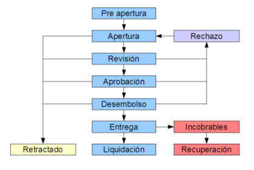
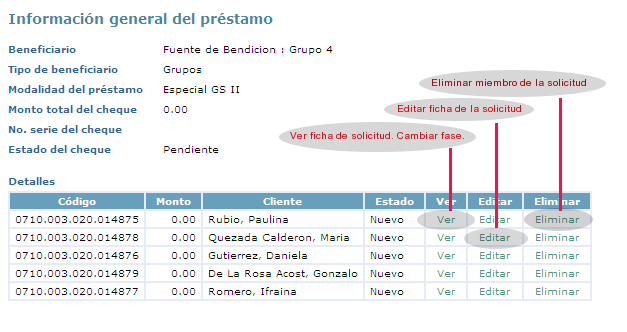
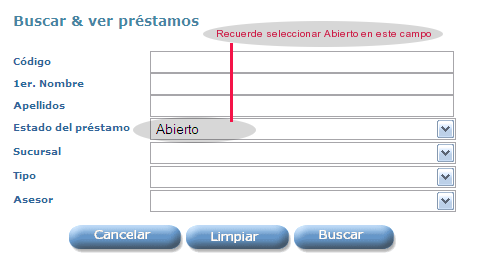

En el e-MMS el proceso de formalización de un crédito es un ciclo que consta de fases.
Vea abajo en la Fig. 6-1 una representación gráfica del mismo.

Fig. 6-1 Ciclo de vida del crédito
Se espera que cada fase sea ejecutada por usuarios con diferentes niveles de acceso y/o
funciones dentro de la IMF, aunque un mismo usuario al que se hayan otorgado todos los
niveles de acceso requeridos pudiera ejecutarlo todo. El proceso
es exactamente igual, lo mismo para un grupo que para un cliente individual.
La información de soporte de un crédito está organizada en una serie de vistas, que
se conectan entre sí mediante hipervínculos, iconos y botones. Esto facilita la
manipulación de la información y la ejecución de cualquier tipo de acción. A continuación se
describen las dos vistas más relevantes:
Algunas de las etapas o fases del ciclo se deben manejar indivualmente, cliente por cliente,
pero otras etapas se ejecutan desde vistas globales que afectan a la vez a todos los
componentes. Este mecanismo busca un manejo más eficiente del tiempo, que garantice
la mayor calidad posible de la información en las etapas iniciales de la solicitud
y agilice las operaciones en los niveles de supervisión más altos. El sistema garantiza
que el trato individualizado que se da a cada fracción o componente del
préstamo, no afecta la integridad y sincronización que demanda el manejo de préstamos para grupos
El sistema deja huellas de la fecha y autor de la
ejecución de cada fase, así como cualquier comentario que el autor entienda oportuno
apuntar como parte de la ejecución de la fase.
Generalmente un Oficial de Créditos inicia el ciclo - Fases Nuevo y Abierto. Para iniciar la solicitud debe ir a:
Siga las instrucciones que se presentan para identificar al cliente o grupo
sujeto del crédito, así como al producto de préstamo. Al final tendrá una nueva solicitud
de crédito en fase Nuevo. Esto incluye una ficha de Información general del préstamo y
también una ficha individualizada de Datos del préstamo para cada uno de los clientes
involucrados en la solicitud. En el caso de una solicitud para grupo, si
algún miembro no desea aplicar, puede removerlo haciendo clic al hipervínculo "Eliminar"
correspondiente. Vea la Fig. 6.1-1.

Fig. 6.1-1 Ficha de Información general del préstamo
Asegúrese de editar convenientemente los datos de cada ficha de detalle e intente mover el
estado de la misma a "Abierto". El sistema no le permitirá completar este movimiento a menos
que se hayan suministrado todos los datos necesarios.
Generalmente un Supervisor o Gerente de Sucursal ejecuta la revisión de la solicitud. Para hacer una revisión debe ir a:

Fig. 6.1-2 Formulario de búsqueda para Revisar préstamos
Asegúrese de completar convenientemente los campos que se presentarán en el
formulario de búsqueda. En particular, en el campo de Estado del préstamo debe
especificar: "Abierto". Tenga en cuenta que en el formulario de búsqueda se espera
que el campo Asesor indique el usuario que originó la solicitud, generalmente debe
coincidir con el Oficial de crédito a quien pertenece el cliente, pero no
es un requisito obligatorio.
La búsqueda arrojará una lista de resultados con todos los
préstamos pendientes de revisión que cumplan los criterios especificados. La
lista incluye hipervínculos que le permitirán entrar a la ficha individualizada de
Datos del préstamo para corregir la solicitud, o avanzarla a alguna de las fases
siguientes del ciclo - Revisado, Rechazado, o Retractado.
Generalmente un Gerente de Programas en representación de un Créditos registra la aprobación de una solicitud. Para completar una aprobación debe ir a:
Asegúrese de completar convenientemente los campos que se presenten en el formulario de búsqueda. La búsqueda arrojará una lista de resultados con todas las solicitudes pendientes de aprobación que cumplan los criterios especificados. La lista incluye hipervínculos que le permitirán Aprobar la solicitud y también obtener más información. Si selecciona la opción de Aprobar, todos los componentes individuales de la solicitud serán aprobados automaticamente. Vea la Fig. 6.1.1-1.
Es importante apuntar que el e-MMS no es un sistema de contabilidad, de manera que no puede
hacer asientos contables, ni emitir cheques o ejecutar transferencia electronicas. En este
sentido el e-MMS solo actúa como una vía para canalizar las
solicitudes, cuyos desembolsos deben ser asentados en el Sistema de Contabilidad de
la IMF, incluyendo emisión del cheque, transferencia, etc. En cualquier caso, esta
operación contable tamnién debe ser registrada en el e-MMS en la fase Desembolso.
Generalmente el Gerente de Contabilidad o un Asistente a cargo, recibe las solicitudes
de crédito ya aprobadas en el e-MMS y procede a ejecutar el asiento contable y la correspondiente
emitición de cheque, transferecia electrónica, etc. Una vez se haya completado la operación
contable y se disponga de un número de serie de cheque, transferencia u otro código afín,
se procede a registrar el desembolso en el e-MMS. Para ver un listado
de las solicitudes pendientes de desembolso o para registrar un desembolso, debe ir a:
Asegúrese de completar convenientemente los campos que se presenten en el formulario de búsqueda. La búsqueda arrojará una lista de resultados con todas las solicitudes pendientes de desembolso que cumplan los criterios especificados. La lista incluye hipervínculos que le permitirán registrar el desembolso y también obtener más información. Si selecciona la opción de Desembolsar, deberá todavía completar algunos datos adicionales incluyendo el fondo contable al que se está cargando el desembolso, el número de serie del cheque u otro código disponible y de manera opcional un patrocinador. Todos los componentes individuales de la solicitud serán declarados automaticamente como desembolsados.
Cada IMF tiene su propio mecanismo para hacer llegar el crédito a los beneficiarios, puede ser un cheque, efectivo, transferencia electrónica, etc. En cualquier caso, esta transferencia final que pone el efectivo a disposición del beneficiario, se registra en el e-MMS en la fase Entrega. Esta operación es registrada generalmente por el Gerente de la Sucursal a que pertenece el beneficiario. Para ver un listado de las solicitudes pendientes de entrega o para registrar una entrega, debe ir a:
Asegúrese de completar convenientemente los campos que se presenten en el formulario de búsqueda. La búsqueda arrojará una lista de resultados con todas las solicitudes pendientes de entrega que cumplan los criterios especificados. La lista incluye hipervínculos que le permitirán registrar la entrega y también obtener más información. Si selecciona la opción de Entregar, deberá todavía completar algunos datos adicionales incluyendo la fecha en que deberá realizarse el primer pago. El sistema aplica algunas restricciones a estos campos para evitar errores en la entrada de datos. Todos los componentes individuales de la solicitud serán declarados automaticamente como entregados. A partir de este momento comienzan a cargarse los intereses y penalidades. Para salir de esta fase, el préstamo tiene que ser saldado completamente o declarado como incobrable.
El ciclo incluye la fase especial "retractado" que se puede invocar desde cualquier otra fase del ciclo excepto desde la fase "entregado". Generalmente la fase "retractado" se invoca si el cliente se arrepiente de la solicitud antes de recibir el efectivo, esta es una fase terminal y se debe ejecutar de manera individual al cliente que específicamente se ha retractado de la solicitud, desde la vista de Datos del Préstamo correspondiente.
Una vez que el ciclo pasa a fase de entregado, empiezan a correr los intereses. La única manera de salir de la
fase entregado es mediante el pago de todos los balances pendientes o el envío del préstamo
a la cartera de incobrables (write off). El envío a incobrable se puede realizar manualmente
por un usuario con los niveles de acceso requeridos, de manera individual para cada cliente.
Adicionalemente, el sistema incluye opciones configurables para el envío automático a
incobrables, en caso de activar esta opción podrá especificar la cantidad de
días en atraso que debe acumular un préstamo para ser enviado automaticamente a la cartera de
incobrables.
Una ventaja de mantener monitoreo y responsabilidad individualizada en préstamos para grupos,
es que no se necesita enviar a incobrables a todo el monto del grupo si surgen dificultades con
algunas de las fracciones que componen el préstamo.